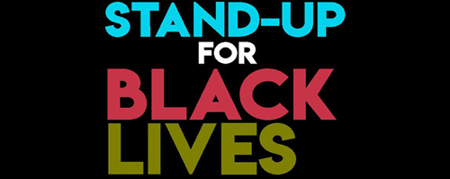
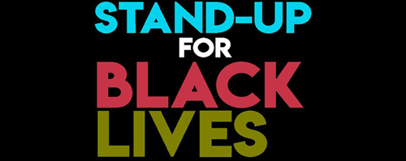
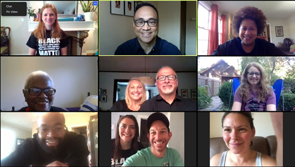

-
 

The Mission Statement
Our mission is to Stand up To Advocate for Neighborhood Diversity, equity and inclusion. Allying and raising awareness of the injustices of marginalized people and educating and inspiring, systemic change through collaboration with our community.
The Team
Stand Up for Black Lives Plus, Prairie Village is an ad-hoc group that came together after the death of George Floyd and the renewed nationwide movement to protest these injustices. Our group organized the rally at the vacant Macy’s parking lot last June that was covered by the KC Star.
My Involvement
Jesse Clyde (J.C.) Nichols was born in 1880 in the free state of Kansas. He transformed Kansas City by building the stunning Country Club Plaza and developing attractive tree-lined residential subdivisions where homes continue to appreciate in value nearly a century later. But for decades, Nichols perpetuated an ugly cancer that has had a long lasting effect on housing, education and the economics of African Americans in greater Kansas City. In 1948, wwo years before his death from a physical cancer, the Supreme Court in the Shelley Vs. Kraemer case struck down the racially restrictive housing covenants.
I moved to this community because I wanted the same thing that any other resident wants for their children, safety and education. But for nearly two decades I have been a resident of a city whose homes have these cancerous covenants and a feeling of unwelcome. And while there are brief seasons the cancer is ignored as if it went into remission, unjust events like, the death of Mr. George Floyd become a relapse with a vengence.
My pastor and his wife had the ideal to do a rally to speak out against the unjust. My wife and I were glad to join in organizing the event. My wife was instrumental in bring key leaders and students to the table and with the help of the team over 2,000 people attended. The sight was more beautiful than any building errected by J.C. Nichols. A city with an ugly history showed how beautiful it is when diverse people unite in sorrow, compassion and love to heal that cancer.